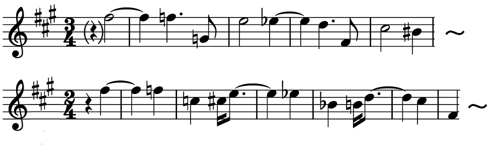

ビーチ: ピアノ五重奏曲
1867年生まれのエイミー・ビーチもレフラーと同時期にボストンで作曲家として活動していた。レフラー（かなり交際範囲が広かったらしい）と交流があったかどうかはわからない。ビーチの名は『ドリーミング（夢想）』といったピアノ曲を通して知っていたが、本格的作曲家とわかってちゃんと聴きだしたのは最近になってからである。
このピアノ五重奏曲はボストン時代の1906年の作で、クナイゼル四重奏団と自身のピアノで初演されている。重厚で渋みもある全体的な作風はブラームスを思わせるが、同時にラフマニノフ風の甘美さも持つ独自の個性が聴き取れる。主要主題において、ブラームスの同じピアノ五重奏曲終楽章の第2主題を引用していると解説されている。拍子も異なるし分かりにくいので比較できるよう譜例をあげておく（上がビーチ、下のブラームスは移調した）。

また、第2楽章中間部のピアノで奏される両手ユニゾンのトリルあたりも何かに似ていると思ったが、よく考えてみればこれもやはりブラームスのピアノ協奏曲第2番の第3楽章にそっくりである。似ているからどうこうではなく、おそらくは敬意を表したものだろうと思う。
先月末からいよいよHyperionの音源もぽつぽつとSpotifyで聴けるようになってきた。このタカーチ四重奏団とオールソンのアルバムも先週見つけたばかりのもの（単に見落としていただけかもしれないが）。オールソンは昔から楷書的弾き方で通す印象が強いのだが、ここでは録音の良さもあってかまったく堅苦しくはない。華麗な音色に耳を奪われる。タカーチ四重奏団の方も言うことなしである。
Amy Beach: Piano Quintet
in F-Sharp Minor, Op. 67
Garrick Ohlsson (pf)
Takács Quartet
(2019)
順番が逆になったがこの曲にまず親しんだのは下のコウル四重奏団のアルバムによってである。こちらもいい演奏だ。第1、第2楽章については上のアルバムと今どちらを聴いていたか取り違えてしまうほど両者とも同傾向の演奏なのだが、第3楽章についてはタカーチ四重奏団の方がテンポが速く、テクニカルな緊張感がより強く感じられるという違いはある。弦のひずみなどもこちらはそのままにしている箇所もある。だが、こちらのアルバムの特徴はやはりアルバムタイトルの"Treasures from the New World"にも現れている通り、南北アメリカ大陸の作品で統一している所にあるのだろう（第3集まで出ている模様）。もう一つ収録されているピアノ五重奏曲はエンリキ・オスワルドというブラジルの作曲家の作品で、これもビーチ同様ロマンティックな逸品だと思う。アルバム解説ではフランス的と書かれているがよくわからない。第1楽章などむしろブラームスのピアノ三重奏曲第1番などに似た雰囲気だと思うのだが。
Amy Beach: Piano Quintet
in F-Sharp Minor, Op. 67
Clélia Iruzun (pf)
Coull Quartet
(2019)
そのほか小品が2曲収められている。やはりブラジルの現代作曲家マルロス・ノブレという人の『詩曲XXI』は、この曲に限っていえばあまりにも甘くイージーリスニング的。一方、もうひとつ最後に置かれたビーチの『ロマンス』は、色褪せた写真を見るような極上のノスタルジーを感じさせる名品（ヴァイオリニストのモード・パウエルに献呈された）で、このアルバムを締めくくるのにふさわしい。
(Aug. 12, 2023)